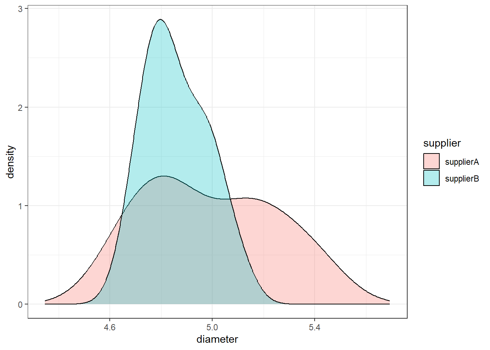
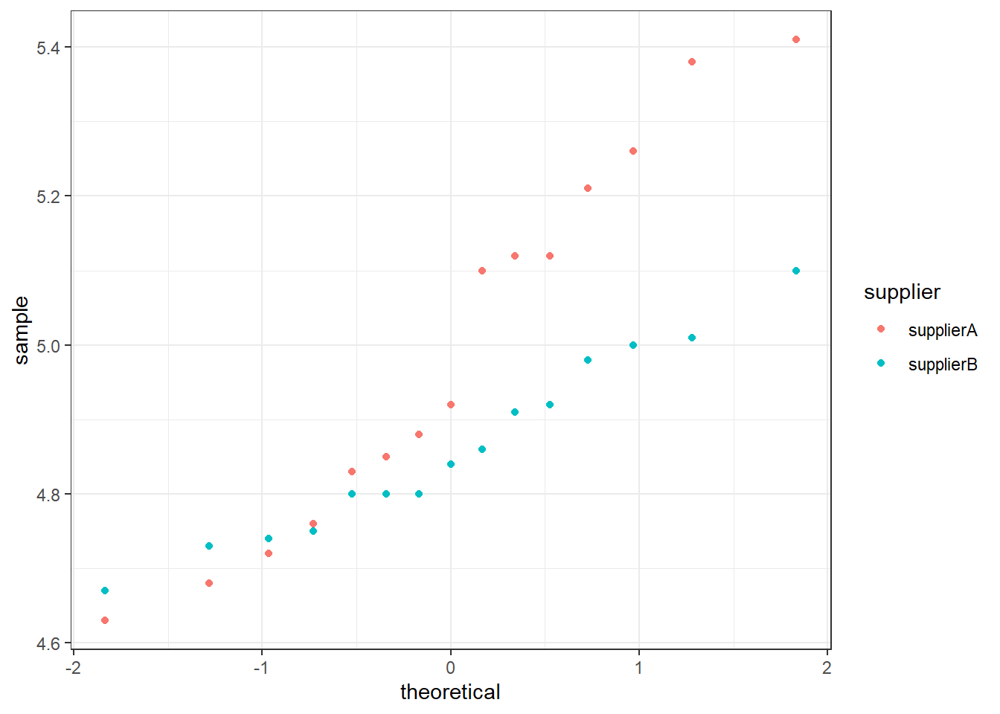

2 Example 1: Diode Diameter Hypothesis Test
In the construction of a safety strobe, a particular manufacturer can purchase LED diodes from one of two suppliers. It is critical that the purchased diodes conform to their stated specifications with respect to diameter since they must be mated with a fixed width cable. The diameter in millimeters for a random sample of 15 diodes from each of the two suppliers was taken.
The diameters can be found in the LEDDIODE data frame in the PASWR2 package.
Question of interest: Does this data provide evidence to suggest a difference in variabilities between the two suppliers? Use a significance level of \(\alpha = 0.01\) for any tests.
Install or load the package and then save the data to your environment. E.g:
2.1 Verifying normality
Before we start, let's note that this test is to compare variances of two unpaired samples. This means the type of test we will use is an \(F\)-test.
As always, we should start by verifying the normality assumption required for this test.
We should do this with ggplot:
ggplot(data = LEDDIODE, aes(diameter, fill = supplier)) +
geom_density(alpha = 0.3) +
xlim(min(density.default(x = LEDDIODE$diameter)$x),
max(density.default(x = LEDDIODE$diameter)$x)) +
theme_bw()

Based on the density plots and quantile-quantile normal plots, it seems reasonable to assume the LED diode widths from both suppliers follow normal distributions. Therefore, proceed with the five-step procedure.
2.2 Step 1 - Hypotheses
Hypotheses — The null and alternative hypotheses to test whether the variability in LED diode widths using supplier A’s (X) diodes is not equal to the variability in LED diode widths using supplier B’s (Y) diodes are:
\[H_0 : \sigma^2_X = \sigma_Y^2 \quad \text{versus} \quad H_1 : \sigma^2_X \neq \sigma_Y^2\]
2.3 Step 2 - Test Statistic
The test statistics chosen are \(S^2_X\) and \(S^2_Y\) since \(E[S^2_X] = \sigma^2_X\) and \(E[S^2_Y] = \sigma^2_Y\).
## supplierA supplierB
## 0.06495524 0.01506381The value of the test statistics are \(s^2_X = 0.0650\) and \(s^2_Y = 0.0151\).
We will determine the probability of obtaining this test statistic when the null hypothesis is true. We do this with standardisation and the probability is called the \(p\)-value.
The standardised test statistic is calculated under the assumption that \(H_0\) is true and its distribution for this test are \[\frac{S^2_X}{S^2_Y} \sim F_{15−1, 15-1}\]
This is what will be used to complete the test.
2.4 Step 3 - Hypothesis Test Calculations
2.4.1 Finding the rejection region
Before we continue to analyse our data we must find the rejection region:
Because the standardised test statistic is distributed \(F_{14,14}\), and \(H_1\) is a two-sided hypothesis, the rejection region is \(f_{obs} < F_{0.005;14,14}\) or \(f_{obs} > F_{0.995;14,14}\)
From the statistical tables or from R, the \(F\)-values that correspond to the significance level (critical values) are \(F_{0.005;14,14} = 0.2326\) and \(F_{0.995;14,14} = 4.2993\).
## [1] 0.2325967 4.2992869This gives us the critical values which make up the limits of the rejection region (what we will compare our result to).
Remember you can sketch these if it helps to see the rejection region graphically.
2.4.2 Finding the standardised test statistic and \(p\)-value
The test we are running here is an \(F\) test on variances. We can calculate the standardised test statistics by hand or with R.
In R:
## supplierA
## 4.312006This gives our standardised test statistic as \(f_{obs} = \frac{s^2_X}{s^2_Y}= \frac{0.065}{0.0151} = 4.312\) and the corresponding \(p\)-value \(2*\mathrm{P}(F_{14,14} \geq 4.312) = 0.0099\).
## supplierA
## 0.009861004R also has a built-in function, var.test to perform the \(F\)-test of equality of variances, which automatically return the value of standardised test statistic and \(p\)-value.
##
## F test to compare two variances
##
## data: diameter by supplier
## F = 4.312, num df = 14, denom df = 14, p-value = 0.009861
## alternative hypothesis: true ratio of variances is not equal to 1
## 99 percent confidence interval:
## 1.002958 18.538551
## sample estimates:
## ratio of variances
## 4.3120062.5 Step 4 - Statistical Conclusion
To draw our conclusions we need to consider our rejection region. Remember this is both ends of the F-distribution for this two-sided test.
QUESTION: Do we reject our null hypothesis?
I. From the rejection region, we reject \(H_0\) because \(f_{obs} = 4.312\) is greater than 4.2993 and is inside the rejection region (in its upper tail).
OR
- From the \(p\)-value, we reject \(H_0\) because the \(p\)-value \(0.0099 < 0.01\).
Whichever method we use, we reject \(H_0\).